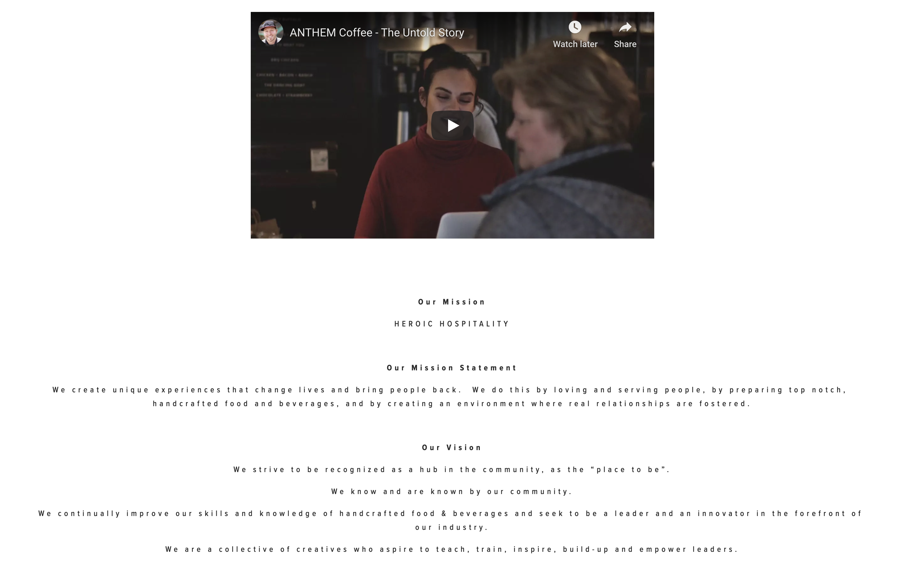
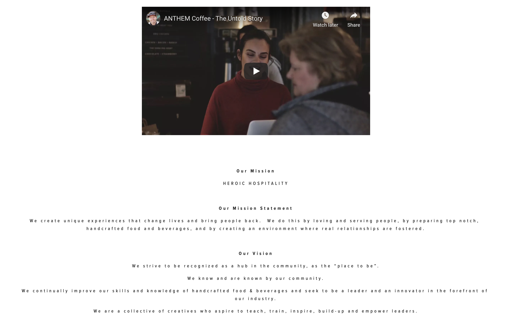
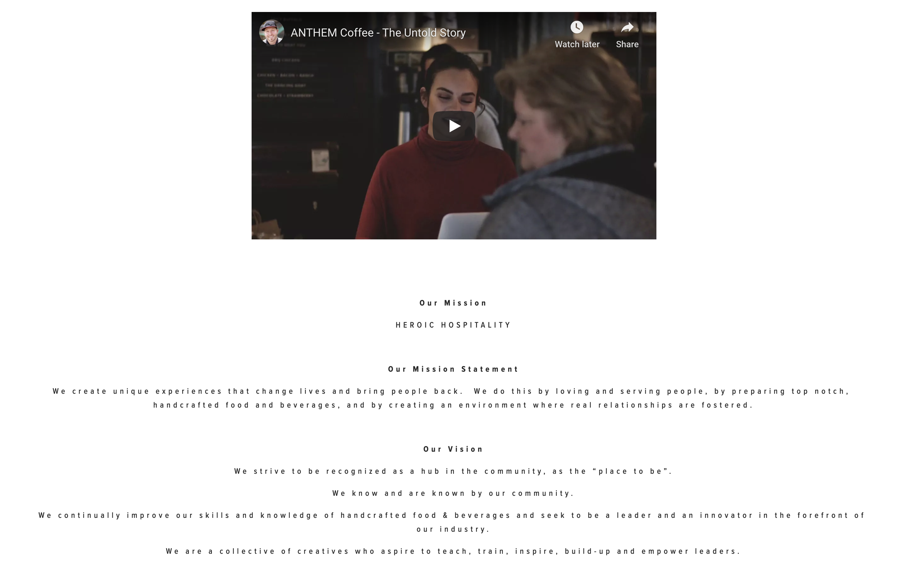
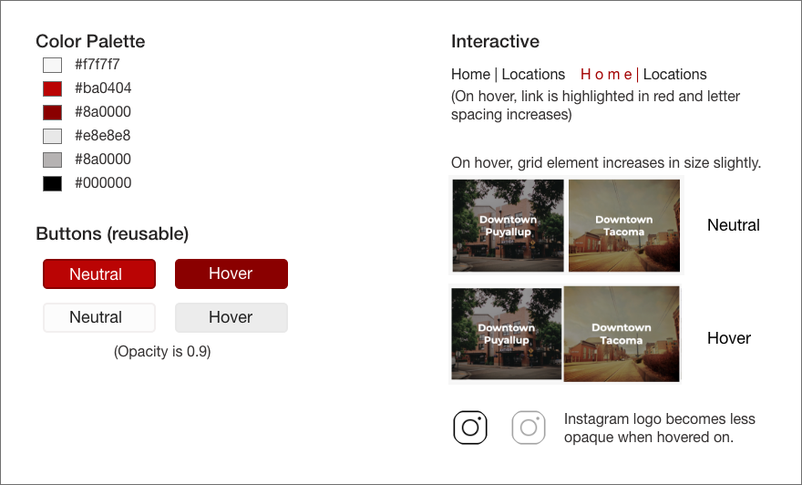

Original Website
Here are a few screenshots of the original website along with a link to the site


 

For this project, I chose to redesign the website of my favorite local coffee shop at home. I first analyzed the usability of the website, specifically the home page, and proceded to make changes of the design.
Here are a few screenshots of the original website along with a link to the site

In order to determine the usability of the website, I focused on four categories: usability, learnability, memorability, and efficiency.
The website was hard to navigate due to the inconsistent font sizes, contrast errors, and length of the page. While a one page website is faster to render, the sizes of each section were larger than the content provided, and part of that was due to the irregular font sizes (either huge or super small). Some sections were also unnecessary and distracted from the major points and information of the website, which was distracting and caused the page to be longer than expected. The sections where the font is super small, such as the drink menu and the values sections are additionally hard to read due to the font choice and how the letter-spacing is very compact. The order of the layout is also a bit confusing and the flow of the read seems very rigid. For example, the different menus are split up by a different section about vendors.
While the overall layout of this website makes usability difficult, a user would still be able to learn how to use the website as the purpose of the website is mainly informational. There is little interaction for the user to do (at most watching a video of going to a new page), and the links are clearly formatted as a button.
Similar to learnability, a user would be able to easily memorize how to use this website. The nav bar is in the traditional spot and the links are clearly marked. However, a user may have a difficult time remembering the order of the sections, making it difficult to navigate and find information on the page.
The efficiency of the page is not ideal in that there are many sections that are not essential or practical to have on the home page and that could be linked to separate pages. Due to this, the user needs to scroll for a while to reach the end of the page.
When inputting Anthem's website in WAVE, there were 66 contrast errors and 76 other alerts refering to empty buttons, redundant buttons, etc. As stated above, Anthem's small and white text over a background image is often hard to read especially with someone with visual impairments. When doing the screenread test, many of their images lacked alt text, so, again, someone with visual impairments would have a very difficult time navigatign the website.
After analyzing the overall usability of the website, I began to redesign the website. I first started by sketching a lofi prototype to determine the new layout and structure of the page.
After creating Lo-Fi prototypes, I used Figma to create Hi-Fi prototypes to create a design that will look just like the final product. I imported photos and created more stylistic buttons/links to make the prototype look more finished.


Below is the visual style guide for my redesigned page. There are some interactive components and the buttons are reused throughout the page.
In this project, I learned the value of lo-fi and hi-fi prototyping and how those prototypes translates into the final product. The progression from Lo-fi prototypes to the final product was smooth and made coding the webpage much easier. I also learned more about responsive design and the effectiveness of changing the layout to be responsive to different screen sizes. In the end, I uploaded my newly designed page back into WAVE and examined the results. Instead of 66 contrast errors, there are now 0, and now only 5 alerts compared to 76. Those 5 alerts refer to empty links due to pages not existing as this redesign only pertained to the home page.